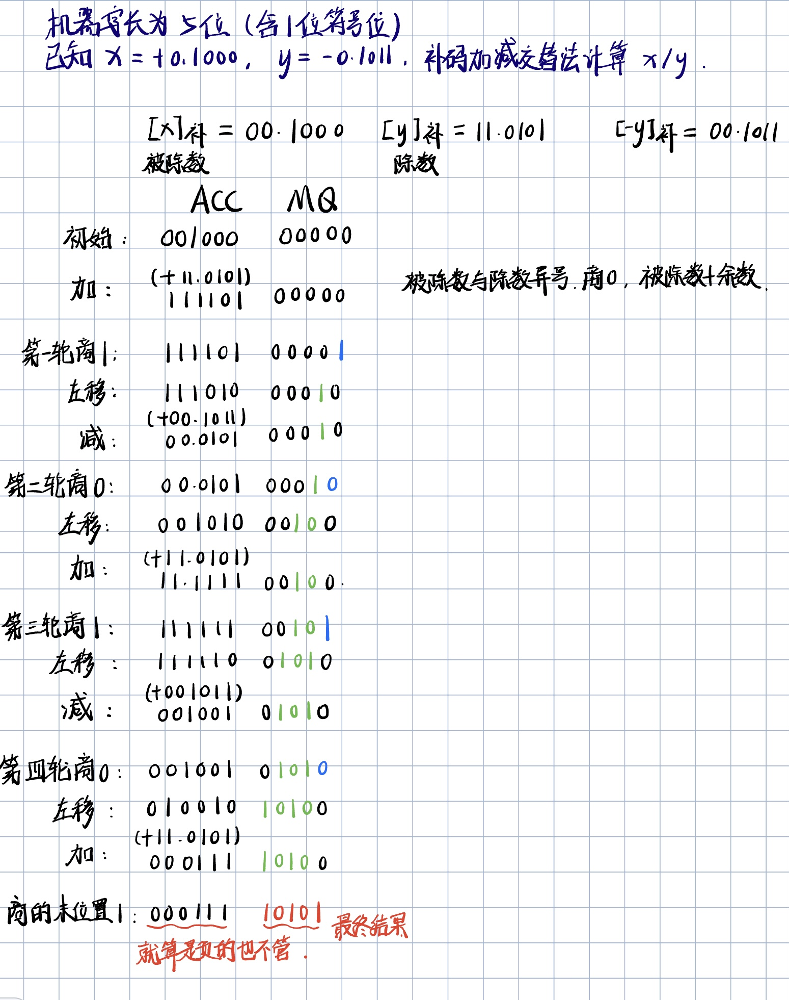
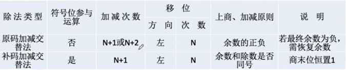
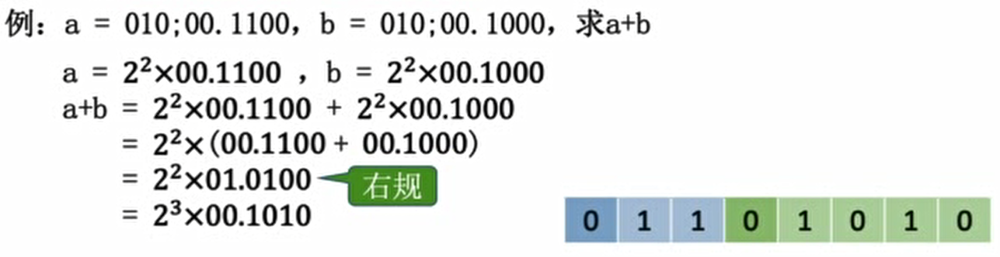
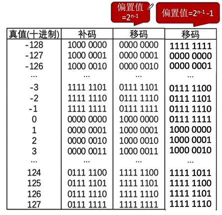
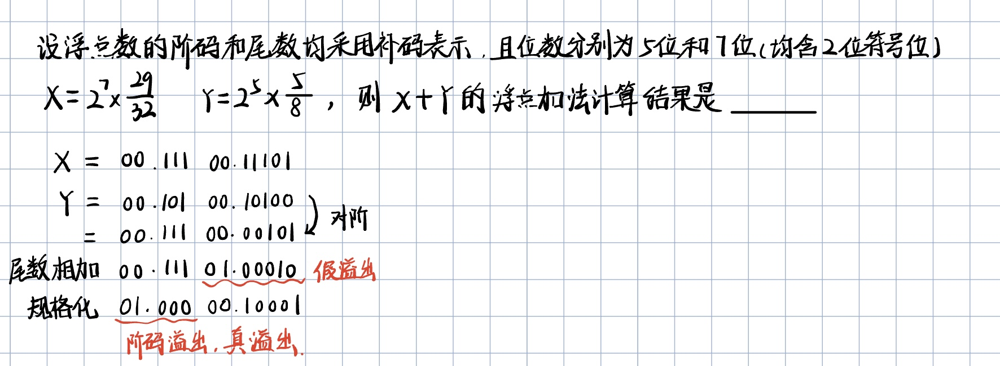

第二章 数据的表示和计算
2.1 定点数的表示
定点数即小数点位置固定。如一个8位的存储单元，规定右边数起第2位为小数点所在位，则存储的二进制数必然是xxxxxx.x的形式。若直接转换成十进制，则可表示的最大值为63.5（111111.1），最小值为0.0。
无符号数的表示
无符号数即整个机器字长的全部二进制位均为数值位，没有符号位，相当于数的绝对值。
对于8位二进制，视为无符号数，则对应的十进制数有$2^8=256$种，最小值为0（0000 0000），最大值为$2^8-1=255$（1111 1111）。
无符号数必然是非负整数，没有无符号小数的说法。
有符号数的定点表示
有符号数即专门指定了一个位（最高位）来存储并表示正负号，从而可以表示负数。
有符号数的定点表示方式有原码、反码、补码、移码等方式。
注意，虽然以上表示方式都可以表示负数，但采用的方法是不同的：如原码用最高位的0/1直接表示数的正/负，而补码是将最高位的权值视为负数
原码
- 定点整数的原码
以8位二进制为例，最高位为符号位（0为正，1为负），所定的小数点视为隐含在最低位的右侧（也就是不占位置）。如1000 0001即-1，0000 0005即+5.
在这种规则下，0有两种表示方式，即1000 0000和0000 0000
范围：对于8位二进制，最大值127（0111 1111），最小值-127（1111 1111）
- 定点小数的原码
最高位为符号位（0为正，1为负），所定的小数点视为隐含在符号位的右侧（但不占位置）。也就是说，二进制定点小数转换为十进制后都是0.xxxxx...
如1100 0000即-0.5，0110 0000即+0.75
范围：对于8位二进制，最大值+0.9921875（0111 1111），最小值-0.9921875（1111 1111）
简单推导：可表示的最大值加上最低位所代表的权值后一定等于1，因此最大值=1-最低位所代表的权值；可表示的最小值即最大值的相反数
反码
反码根据原码得到。
- 若原码的符号位为0，则反码与原码相同
- 若原码的符号位为1，则将原码的数值位全部取反即得到反码。
eg：
- x=+19，$[x]_原=0001 0011$，$[x]_反=0001 0011$
- x=-19，$[x]_原=1001 0011$，$[x]_反=1110 1100$
反码只是原码转换到补码的一个中间状态，实际中很少应用。
补码
原码表示正负数虽然直观，但用原码进行加法运算无法直接得到正确结果；而补码得益于其特殊的表示方法，解决了这一问题。
补码不再直接将最高位用于正负号表示，而是给予一个负的权值。
与无符号数相比较，在8位无符号数中，最高位的权值为$2^7$；而在8位补码（定点整数）中，最高位的权值为$-2^7$。同理，若用于表示定点小数，则最高位的权值为$-2^0$。
举个例子，-1的8位补码表示为1111 1111，即$-2^7+2^6+2^5+2^4+2^3+2^2+2^1+2^0$。
这种规则下，0只有一种表示方式，即0000 0000
- 原码转换为补码
- 若原码为正数（这里我们把+0排除在外），则补码与原码相同
- 若原码为负数（这里我们把-0排除在外），则将原码转换为反码后末位+1即得到补码。
- 补码转换为原码：方法与上述一致。
- 定点整数的补码
- 最大值：$2^8-1=255$（
0111 1111） - 最小值：$-2^8=-256$（
1000 0000） - 定点小数的补码
- 最大值：$1-2^{-7}$（
0111 1111） - 最小值：$-1$（1000 0000）
移码
移码根据补码得到。直接对（整数）补码的符号位取反就得到移码。
移码的符号位含义与补码相反，1表示正数，0表示负数。且移码只能用于表示整数。
移码的特点是，随着移码所表示的实际数值的增大，其二进制表示直观上（也就是当作无符号数来看）也是增大的。这使得移码之间可以直接按位比较大小，不需要额外进行运算。
2.2 定点数的运算
符号扩展
如8位二进制数扩展为16位二进制数。
- 对于正整数，其原码、反码、补码表示都是一样的，扩展只需在高位补0
- 对于负整数
- 原码：符号位保持在最高位，在数值位的高位补0
- 反码：符号位保持在最高位，在数值位的高位补1
- 补码：与反码相同（因为补码中右起第一个1往左的部分总是与反码一致）
- 对于正小数，为使权值不变，应在低位补0
- 对于负小数
- 原码：低位补0
- 反码：低位补1
- 补码：与原码相同，低位补0（因为补码中右起第一个1往右的部分总是与原码一致）
数据的存储和排列
- 大端模式：内存的低地址存储数据的高字节，符合阅读习惯
- 小端模式：内存的低地址存储数据的低字节，便于机器处理（因为机器读取是从内存低地址开始往高地址读的）
边界对齐
计算机按字节编址，一个字节对应一个地址
通常支持按字、按半字、按字节寻址
假设访存每次读/写1个字，若数据按边界不对齐方式进行存储，则数据可能跨越边界，导致机器需要访存两次才能拼接出完整的数据。
边界对齐方式可能会浪费一些空间，但能保证每次读数据都只需要1次访存。
移位运算
- 算数移位
符号位保持不变，仅对数值位进行移位。
- 对于原码：右移时高位补0，左移时低位补0.
- 对于反码：右移时高位补符号位的值，左移时低位补符号位的值。
- 对于补码：对于正数，补位方式与原码相同；对于负数，由于负数的补码来源是反码取反+1，+1操作导致从最低位开始连续的1会全部翻转成0，最后将碰到的第一个0翻转为1，因此负数的补码在形式上，以碰到的第一个0为界，左侧部分实质与反码一致，右侧（包括它自己）与原码一致。所以在右移补位时，遵循反码的规则高位补1；在左移补位时，遵循原码的规则低位补0.
在比较简单的情况下可以用左移右移代替乘2和除以2的操作。但右移必定导致精度丢失。
如7（0111），除以2应得3.5，用右移一位来代替只能得到3（0011），与真实值3.5相比不够精确。
- 逻辑移位
把整一个二进制数看作无符号数，整体移位。无论左移右移都补0。
- 循环移位
用于大端存储、小端存储之间的转换。
加减运算和溢出判断
加减运算
补码的特性就是在进行加减运算时不必单独考虑符号位如何处理，可以带着符号位一起整体进行运算。
设机器字长为8位（含1位符号位），$A=15，B=-24，$求$[A+B]_补$和$[A-B]_补$
解：
$A_补 = 00001111， B_补 = 11101000$，直接按位相加得$[A+B]_补=11110111$
$[-B]_补=00011000$，直接按位相加得$[A-B]_补=00100111$
加减运算器
无符号整数的加减法和补码加减法可以用同一个电路实现，但溢出判断不一样
OF：用于判断有符号数运算是否发生溢出，只对有符号数加减法有意义，与无符号数无关。
- 计算方法：OF=最高位产生的进位 异或 次高位产生的进位
- 进行无符号数加减法时，OF=1，加减法是否溢出？（否，OF位只对有符号数加减法有意义）
CF：用于判断无符号数的加减法是否发生了进位或借位（即溢出）
- 计算方法：最高位产生的进位 异或 sub（若是减法则sub=1，若是加法则sub=0）
- 只对无符号数加减法有意义
溢出判断
-
上溢和下溢
-
只有”正数+正数“的时候才会上溢，上溢的表现为”正+正=负“（因为进位进到符号位里去了）
-
只有”负数+负数“的时候才会下溢，下溢的表现为”负+负=正“
-
判断方法
-
方法一：采用一位符号位，对运算前和运算后的符号位进行逻辑判断.设$A$的符号位为$A_S$，$B$的符号位为$B_S$，运算结果的符号为$S_S$，溢出判断符号为$V$，无溢出时$V=0$，有溢出时$V=1$，则真值表如下：
$A_S$ $B_S$ $S_S$ $V$ 0 0 1 1 1 1 0 1 ... ... ... 0 逻辑表达式即$V=A_SB_S\overline{S_S}+\overline{A_S}\overline{B_S}S_S$
-
方法二：采用双符号位。正常情况下正数符号位为$00$，负数符号位为$11$。发生上溢时运算结果符号位为$01$，发生下溢时运算结果符号位为$10$，即符号位两位数值相异则一定有溢出。做异或运算即可判断。
乘法运算和溢出判断
乘法
回忆一下十进制的竖式乘法，其实质是把乘数按位权拆开后再逐位与被乘数相乘，最后相加。二进制的竖式乘法同理，且比十进制更简单。将乘数按位权拆开后，若某位为0，则与被乘数相乘后所得的必为全0；若某位为1，则与被乘数相乘后得到被乘数本身。
-
机器实现二进制乘法需要解决的问题
-
如何处理符号位
- 最终结果的位数是两个乘数位数之和，如果超出了寄存器一次能保存下来的位数，如何处理？
-
如何把所有乘积保存下来再统一相加
-
原码一位乘法
-
如何处理符号位：符号位异或运算得到运算结果的符号位
- 如何处理位数翻倍：两个寄存器，ACC存放乘积高位，MQ存放乘积低位
- 如何相加:一边乘一边加
设机器字长为5位（含1位符号位），$[x]_原=1.1101，[y]_原=0.1011$，采用原码一位乘法求$x\times y$
-
初始：ACC清零，(ACC)=00000，(X)=01101，(MQ)=01011。MQ中参与乘法运算的位始终是MQ的最低位。
-
1：MQ最低位为1，所以让ACC加上(X)，(ACC)=01101
-
2：ACC和MQ同时逻辑右移一位，(ACC)=00110，
原最低位上的1移到MQ的最高位，(MQ)=10101；
MQ最低位为1，所以让ACC加上（X），(ACC)=10011
-
3：ACC和MQ同时逻辑右移一位，(ACC)=01001，
原最低位上的1移到MQ的最高位，(MQ)=11010；
MQ最低位为0，所以让ACC加上0，(ACC)=01001
-
4：ACC和MQ同时逻辑右移一位，(ACC)=00100，
原最低位上的1移到MQ的最高位，(MQ)=11101；
MQ最低位为1，所以让ACC加上(X)，(ACC)=10001
-
5：ACC和MQ同时逻辑右移一位，(ACC)=01000，
原最低位上的1移到MQ的最高位，(MQ)=11110；
MQ最低位为0，所以让ACC加上0，(ACC)=01000
-
6：至此MQ上原二进制数的各位都已计算完毕，又乘积的符号位应为1，故（ACC）=11000。
-
(ACC)=11000是乘积的高位部分，(MQ)=11110中的下划线部分是乘积的低位部分，因此得到最终乘积为1.10001111
无符号数乘法运算电路结构

控制逻辑&计数器：
- 用于发出“加法、右移、写使能”的控制信号，检查当前乘积寄存器（即高四位）中末位是0还是1，若为1则执行加法（高四位与被乘数相加）然后右移，否则直接右移；
- 计数器用于记录加法、右移次数
- 写使能信号用于控制乘积寄存器P，使ALU将结果写入P
加法是无符号数加法，右移是逻辑右移。
溢出判断：
- 若乘积寄存器（即高四位）为全0，则未溢出
- 否则溢出
有符号数乘法运算电路结构

与无符号数乘法运算电路结构的区别：
- 没有进位位
- 增加了一个辅助位，逻辑上位于乘数寄存器的后面
有加减法，均为有符号数加法，右移是算术右移
溢出判断：
- 若乘积寄存器位全0或全1，则未溢出
- 否则溢出
除法运算
注意以下都是定点数除法，因此要求被除数＜除数，否则无法用定点数表示商
原码除法：恢复余数法
符号位单独处理，无视小数点（即数值位取绝对值进行运算）
初始状态：被除数存储在ACC中，除数存储在通用寄存器中，商在MQ寄存器中，初始化全0
- 设置MQ寄存器的最低位，默认先商1
- 将ACC中的数与除数相减，若符号位为0，则说明商正确，继续下一步；否则，改为商0，同时将ACC中的数与除数相加，恢复回原先的ACC值
- 若商未满n位，则将ACC与MQ视为一个整体（ACC在高位，MQ在低位）共同逻辑左移（因此左移n次，上商n+1次）
- 重复1-3步，直到求出n位商（设机器字长为n+1位）
余数：最后存储在ACC中，符号位应为0。注意ACC中不是真实余数，若ACC值为00111，则真实余数为0.0111×2^{-n}
原码除法：加减交替法/不恢复余数法
实际是恢复余数法的优化。当恢复余数法商1出现负的余数时，在改为商0的同时可以不恢复余数而直接将余数左移并加除数
初始状态：被除数存储在ACC中，除数存储在通用寄存器中，商在MQ寄存器中，初始化全0
- 设置MQ寄存器的最低位，默认先商1
- 将ACC中的数与除数相减，若符号位为0，则说明商正确，继续下一步；否则，改为商0，同时将ACC与MQ视为一个整体共同逻辑左移，其中ACC部分与除数相加
- 若商未满n位，则将ACC与MQ视为一个整体（ACC在高位，MQ在低位）共同逻辑左移（因此左移n次，上商n+1次）
- 重复1-3步，直到求出n位商（设机器字长为n+1位）
余数：最后存储在ACC中，符号位应与商相同。若余数为负，还需要额外 对余数再加一次除数来得到正确余数。注意这也不是真实余数，若ACC值为00111，则真实余数为0.0111×2^{-n}
加/减n+1次，左移n次，最终可能会多出一次加
补码除法：加减交替法/不恢复余数法
- 符号位参与运算
- 被除数/余数、除数采用双符号位表示
- 步骤：
- 被除数与除数同号，则被除数-除数；异号则被除数+除数
- 余数和除数同号，商1，余数左移一位然后-除数
- 余数和除数异号，商0，余数左移一位然后+除数
- 当余数左移的次数等于补码数值位的位数后结束
- 商的末位恒置为1，即使余数是负的也不需要再处理


除法电路的基本结构

乘法除法电路的基本结构总结
必须具备的部件：
- ALU：用于实现加、减法
- 具有移位功能的寄存器，乘法运算要求右移，除法运算要求左移
- 控制逻辑：发出加/减控制信号、左移/右移控制信号、写使能信号
- 计数器：用于记录还剩几轮处理
2.3 浮点数的表示
浮点数的表示
对于固定的8位二进制数据，若采用定点表示，则数据可表示的范围始终是有限且比较小的；浮点数则解决了这个问题。
回忆科学计数法，它由三部分组成：
即尾数（绿色）、阶数（青色）和底数（黑色）
浮点数表示法
浮点数也是用同样的方法表示，阶数部分称为阶码，作为浮点数据的前半段；尾数部分就是尾数，作为浮点数据的后半段；底数默认为2，省略。
- 阶码
阶符+阶码的数值部分。是常用补码或移码表示的定点整数。
反映了数据中的小数点要往前/往后浮动多少位
- 尾数（未规格化）
数符+尾数的数值部分。是常用原码或补码表示的定点小数。
注意是定点小数，即整数部分总为0，这一点与十进制的科学计数法不同。
尾数的数值部分的位数n反映浮点数的精度。
浮点数的表示范围
浮点数表示范围关于原点对称。
正上溢：运算结果大于最大整数
负上溢：运算结果小于最小负数
正上溢和负上溢统称为上溢。
正下溢：运算结果在0和最小正数之间
负下溢：运算结果在0和最大负数之间
正下溢和负下溢统称为下溢。
发生下溢时，浮点数值趋近于0，计算机直接当作机器零处理
浮点数尾数的规格化
概念
规格化是对尾数存储方式的一种优化，使浮点数能表示尽可能高的精度。
-
左规：尾数算术左移，从而舍弃尾数部分高位连续的0（注意，如果是补码表示的尾数则是连续的1），同时阶数也相应调整。如$2^2\times(+0.01001)$对尾数规格化后得到$2^1\times(+0.10010)$。
-
右规：尾数算术右移，处理浮点数运算结果尾数出现溢出时的情况。

细节
- 对于原码表示的尾数（基数为2），①0.011（0.25+0.125=0.375），规格化后为0.110（这里省略阶码部分的调整）；②1.011（-0.25-0.125=-0.375），规格化后为1.11
形式上的规律就是，原码表示的小数规格化后，其小数点后第一位一定为1，而整数部分可以为1也可以为0，是符号位（注意这一点与IEEE754不同，IEEE754格式要求小数表示为$(-1)^S\times1.M\times2^{E-bias}$的形式，即整数部分一定为1，且是一个有效位而不是数值位，并且默认不存储，只存储$M$）
- 对于补码表示的尾数（基数为2），如1.101（-1+0.5+0.125=-0.375），规格化后为1.010（这里省略阶码部分的调整）
形式上的规律就是，补码表示的小数规格化后，小数点前后两位一定不相同。
-
如果基数改变，如基数为4，则原码表示的小数规格化后，小数点后两位一定不全为0
-
总结：原码表示的规格化小数中的尾数M（即小数点后面的部分，小数点后位的权值为$R^{-1}$、$R^{-2}$...以此类推）的绝对值满足 $1/R≤|M|≤1$，其中$R$为基数。
如，当基数为2时，原码小数1.101中的尾数101的绝对值为$2^{-1}+2^{-3}=0.375＜1/2$，因此1.101不是规格化小数；而原码小数0.11中的尾数11的绝对值为$2^{-1}+2^{-2}=0.75$，$1/2≤0.75≤1$，因此0.11是规格化小数。
IEEE754
移码，形式上看是直接将补码的符号位取反，从数值上看则是补码（真值）加上一个固定的偏置值得到。
如8位移码，就是将8位补码加上128D（$2^{8-1}$）的偏置值得到。
IEEE754对浮点数阶码部分的规定为，对于8位阶码，为补码（真值）加上偏置值（$2^{8-1}-1$）所得。这样规定使得阶码最小值和阶码次小值都对应特殊的二进制数：全1和全0.

对数符的规定
数符位于浮点数的最高位。0/1表示数的正负。
对阶码的规定
- 用移码表示，但使用的偏置值为$2^{n-1}-1$而非$2^{n-1}$，其中$n$为阶码部分的位数。
- 采用上述偏置值使得阶码部分可表示的最小值和次小值分别为全0和全1，这两个数用作特殊用途（见下文”表示范围“一节），而不用于表示浮点数的阶数。
- 因此，对于8位阶码，能表示的阶数范围为$-126 到 +127$
对尾数的规定
- 用原码表示
- 完整的小数是$1.M$，但1省略不存储，只存储M。
浮点数的真值计算
| 类型 | 数符S | 阶码E | 尾数数值M | 总位数 | 偏置值 |
|---|---|---|---|---|---|
| float | 1 | 8 | 23 | 32 | 127 |
| double | 1 | 11 | 52 | 64 | 1023 |
| long double | 1 | 15 | 64 | 80 | 16383 |
- float浮点数的真值
$(-1)^S\times1.M\times2^{E-127}$
- double浮点数的真值
$(-1)^S\times1.M\times2^{E-1023}$
表示范围
- float浮点数的最小绝对值
尾数全为0，阶码真值最小-126，整体真值$1.0B\times2^{-126}$
- float浮点数的最大绝对值
尾数全为1，阶码真值最大127，整体真值$1.1111..11B\times2^{127}$
- 若要表示的数的绝对值比最小的绝对值还要小（如$0.001B\times2^{-126}$），令阶码全为0，要表示的数的小数部分直接作为尾数（此时整数部分一定为0，因为再规格化的话阶码无法表示）。
| 阶码 | 尾数 | 含义 |
|---|---|---|
| 全0 | 不全为0 | 非规格化小数 （比规格化小数的最小绝对值还要小的数） |
| 全0 | 全0 | ±0 |
| 全1 | 全0 | ±$\infin $ |
| 全1 | 不全为0 | NaN |
2.4 浮点数的运算
浮点数的加减运算
- 对阶：小阶向大阶看齐。尾数每右移一位，阶数+1，直到阶码相等
- 尾数求和：将对阶后的尾数按定点数加减运算规则运算
- 规格化
- 左规：造成下溢，直接当作0处理，不算真正的溢出
- 右规：造成上溢
- 舍入
- 恒置1：多出的直接砍掉，余下的尾数的最后一位恒置为1
- 规则2：若砍掉的最高数值位为1，则向高位进1
- 规则3：四舍五入
- 考试：超出的位数直接丢掉，不舍入
- 溢出判断
- 阶码的溢出才是真正的溢出
- 尾数的溢出可以进行规格化和舍入处理

强制类型转换
- 无损转换
- char→int→long→double
- float→double
- 有损转换
-
int→float：可能损失精度（int32位，float的尾数24位）但不会溢出
注：如，这个int类型的数是01FF FFFF（25个1，即2^25-1=33554431），转为float类型后值为3.35544×10^7，即33554400，最末尾的31被抹零了，丢失了精度
-
float→int：可能溢出也可能损失精度